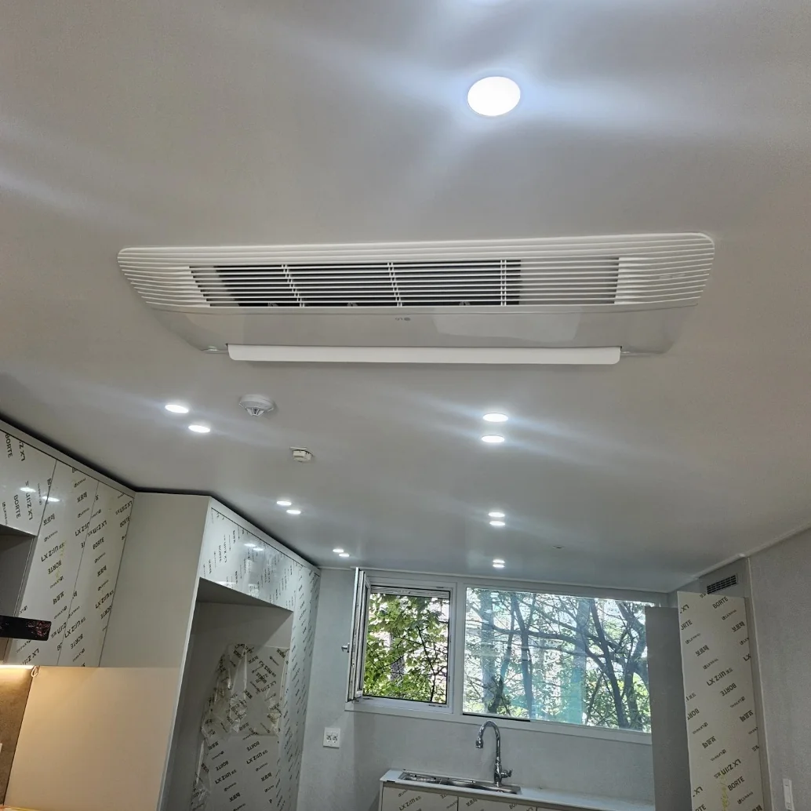
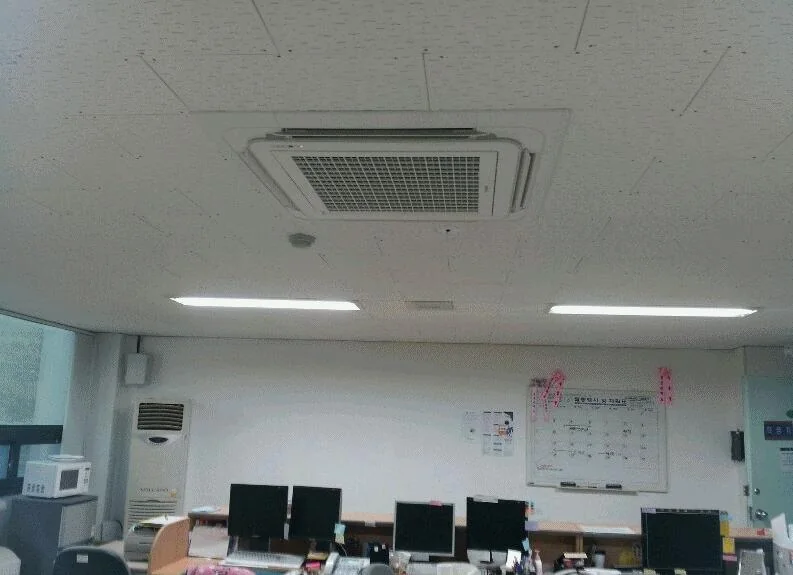
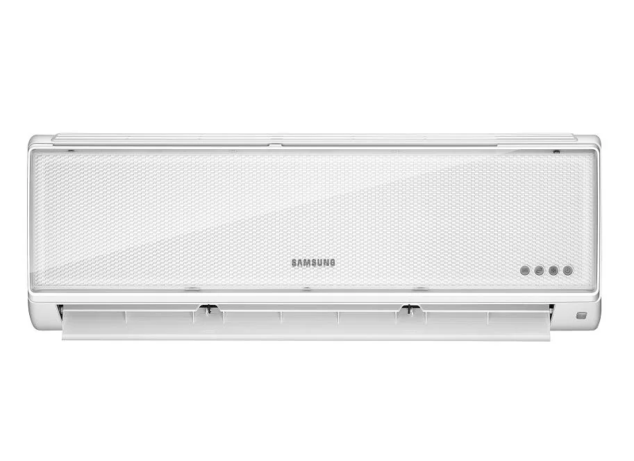
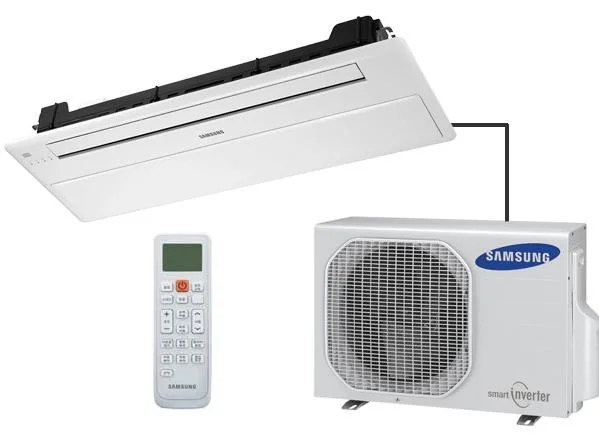
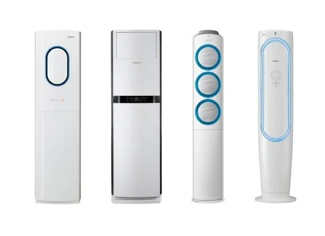
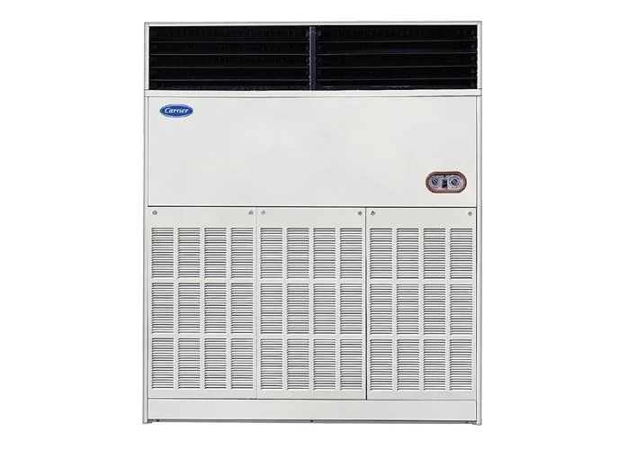
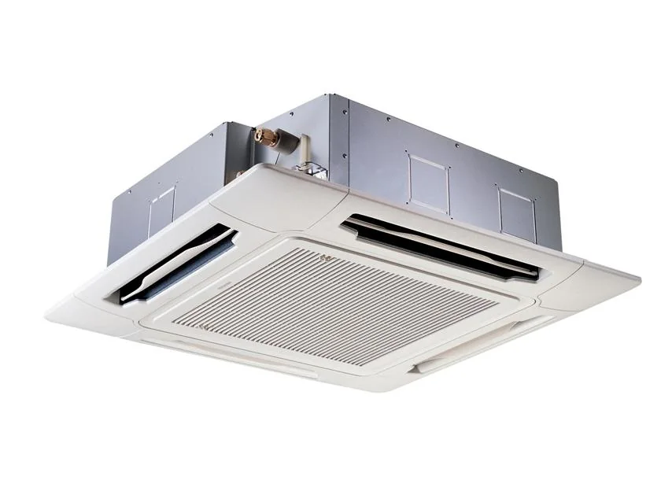
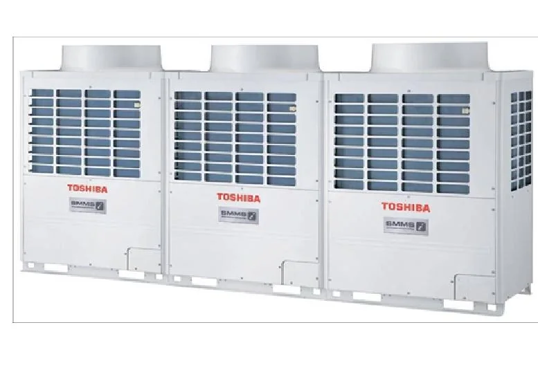
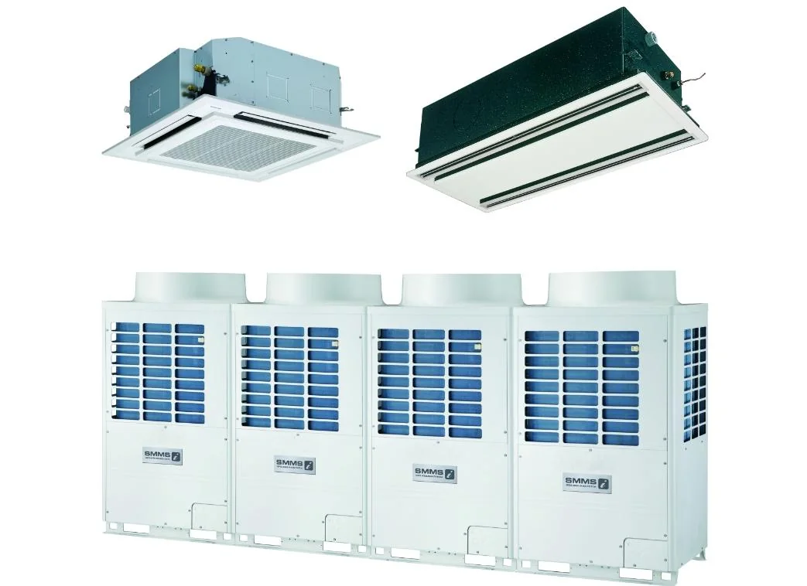

공간에 맞는 상담
어떤 장소에서 어떻게 사용하실지 듣고,
필요한 냉난방과 설치 조건을 함께 살핍니다.
업체소개 · 조은공조시스템
가정의 편안함부터 일터의 쾌적함까지.
조은공조시스템이 함께합니다.
냉난방기 판매 · 설치 · 이전설치
광주·전남을 중심으로, 다양한 공간의 냉난방을 상담합니다.

안녕하세요, 조은공조시스템입니다.
조은공조시스템은 가정용 냉난방기부터 업소용·중대형 냉난방기, 천장형 시스템에어컨까지 판매와 설치, 이전설치를 진행합니다.
찾아주시는 분들의 만족과 신뢰를 소중히 생각합니다. 공간에 맞는 제품을 함께 고민하고, 설치부터 마무리까지 꼼꼼하게 살피겠습니다.
조은공조시스템 대표 박상용
우리가 중요하게 생각하는 것
어떤 장소에서 어떻게 사용하실지 듣고,
필요한 냉난방과 설치 조건을 함께 살핍니다.
눈에 보이는 마감과 설치 과정 모두,
기본을 지키는 시공을 추구합니다.
궁금한 점은 편하게 물어보실 수 있도록,
이해하기 쉬운 설명과 친절한 상담을 약속합니다.
다양한 공간, 필요한 냉난방
사진을 누르면 공간별 시공사례를 볼 수 있습니다.

벽걸이 · 스탠드 · 2in1 · 천장형

업무공간에 맞춘 시스템에어컨

업소용 · 중대형 · 천장형 냉난방기
다른 지역의 설치 가능 여부와 일정은 문의해 주세요.
이용안내 보기 ↗아래 사진은 제품 형태를 안내하기 위한 예시입니다. 설치할 공간에 맞는 제품과 모델은 상담을 통해 확인해 주세요.







함께 이야기해 볼까요?
설치할 공간과 원하시는 작업부터 알려주세요.
사진을 불러오지 못했습니다. 다음 사진으로 넘겨 주세요.
사진을 좌우로 밀어서 넘겨 보세요.화살표 버튼이나 키보드 ← →로 넘겨 보세요.